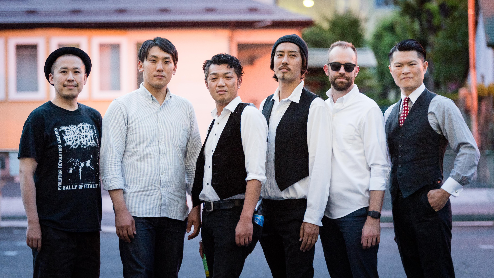

Quarry麺
ビートルズトリビュートバンドとして2013年4月結成。
初期ビートルズを彷彿とさせるエネルギッシュなパフォーマンスと卓越したコーラスワーク、原曲への忠実なアプローチを身上とし、最初期の楽曲から後期のものまで幅広いレパートリーを誇る。青森県内を中心に活動し、自主企画や野外音楽フェスティバルなどに多数出演。4人のビートルのソロ作品や「Abbey Road」の完全再現ライブなどコアなファンも楽しませるライブ内容は必見。弘前市駅前のアイリッシュパブ「Robbin's Nest」で「The BEATLES tribute band seasonal gig」と題し、自主定期イベントを開催している。